Web page content
This year we have 14 participants. For overview table please see general information about results. We will also provide comparison with tools participated in previous years of OAEI in terms of highest average F1-measure.
You can download subset of all alignments for which there is a reference alignment. In this case we provide alignments as generated by the SEALS platform (afterwards we applied some tiny modifications which we explained above). Alignments are stored as it follows: matcher-ontology1-ontology2.rdf.
Tools have been evaluated based on
We have three variants of crisp reference alignments (the confidence values for all matches are 1.0). They contain 21 alignments (test cases), which corresponds to the complete alignment space between 7 ontologies from the OntoFarm data set. This is a subset of all ontologies within this track (16) [4].
For each reference alignment we provide three evaluation modalities
| ra1 | ra2 | rar2 | |
| M1 | ra1-M1 | ra2-M1 | rar2-M1 |
| M2 | ra1-M2 | ra2-M2 | rar2-M2 |
| M3 | ra1-M3 | ra2-M3 | rar2-M3 |
Regarding evaluation based on reference alignment, we first filtered out (from alignments generated using SEALS platform) all instance-to-any_entity and owl:Thing-to-any_entity correspondences prior to computing Precision/Recall/F1-measure/F2-measure/F0.5-measure because they are not contained in the reference alignment. In order to compute average Precision and Recall over all those alignments we used absolute scores (i.e. we computed precision and recall using absolute scores of TP, FP, and FN across all 21 test cases). This corresponds to micro average precision and recall. Therefore, resulted numbers can slightly differ with those computed by the SEALS platform (macro average precision and recall). Then, we computed F1-measure in a standard way. Finally, we found the highest average F1-measure with thresholding (if possible).
In order to provide some context for understanding matchers performance we included two simple string-based matchers as baselines. StringEquiv (before it was called Baseline1) is a string matcher based on string equality applied on local names of entities which were lowercased before (this baseline was also used within anatomy track 2012) and edna (string editing distance matcher) was adopted from benchmark track (wrt. performance it is very similar as previously used baseline2).
In tables below, there are results of all 14 tools with regard to all combination of evaluation modalities with crisp reference alignments. There are precision, recall, F1-measure, F2-measure and F0.5-measure computed for the threshold that provides the highest average F1-measure computed for each matcher. F1-measure is the harmonic mean of precision and recall. F2-measure (for beta=2) weights recall higher than precision and F0.5-measure (for beta=0.5) weights precision higher than recall.
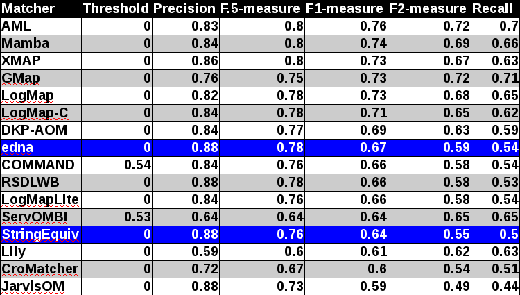
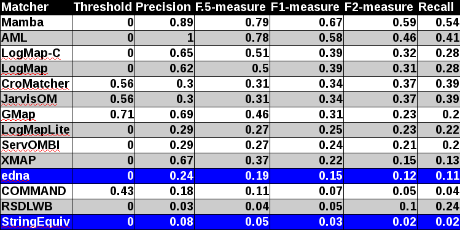
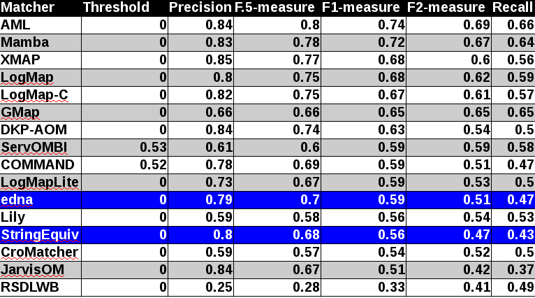
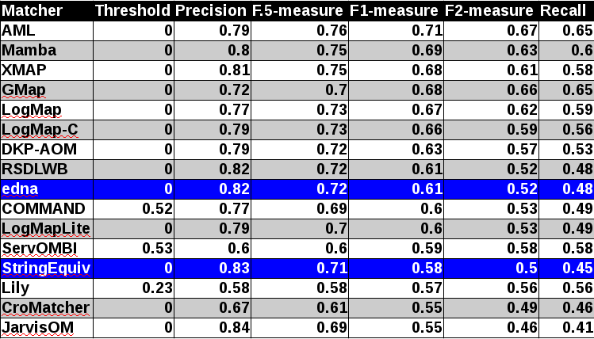
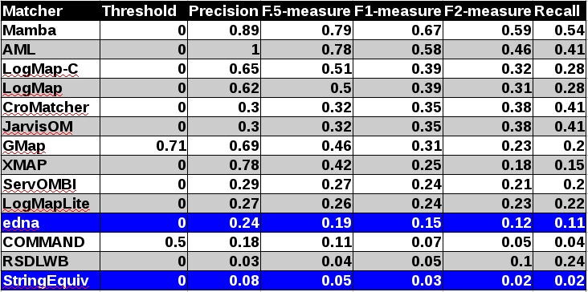
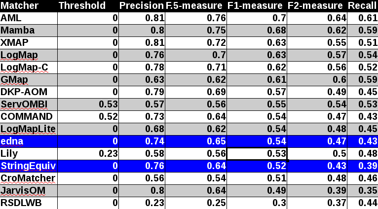
Table below summarizes performance results of tools participated last 3 years of OAEI, conference track with regard to reference alignment ra2.
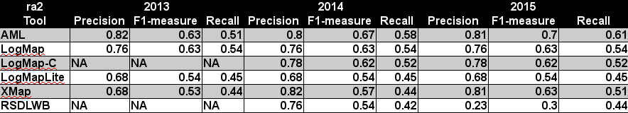
While XMap achieved the highest improvement between last two years (0.06 increase wrt. F1-measure), AML achieved the highest improvement between 2015 and 2013 (0.07 increase wrt. F1-measure), see Table below.
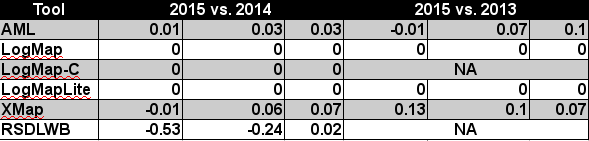
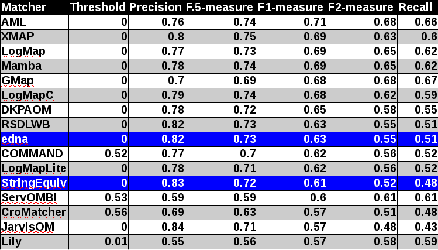
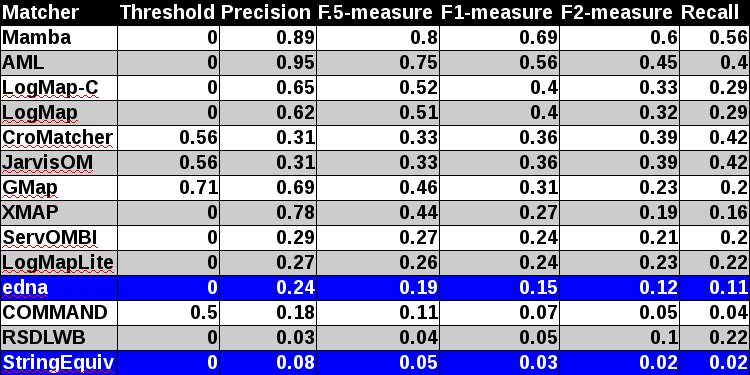
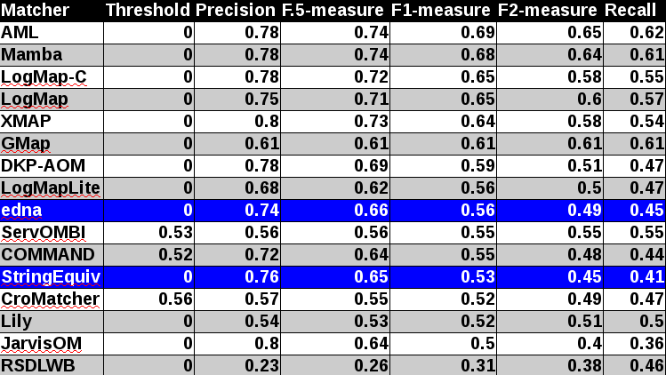
All tools except RSDLWB (precision and recall were below 0.5) are visualized in terms of their performance regarding an average F1-measure in the figure below. Tools are represented as squares or triangles. Baselines are represented as circles. Horizontal line depicts level of precision/recall while values of average F1-measure are depicted by areas bordered by corresponding lines F1-measure=0.[5|6|7].

With regard to two baselines we can group tools according to matcher's position (above best edna baseline, above StringEquiv baseline, below StringEquiv baseline). While there are no difference in first two groups between ra1-M3 and ra2-M3 regarding tools position, there are two tools which went from first to the second group. However, the F1-measure below edna baseline is only 0.01. In all there are eight tools above edna baseline (AML, Mamba, LogMap-C, LogMap, XMAP, GMap, DKP-AOM, LogMapLite) for rar2 reference alignment which is considered as most correct and most difficult reference alignment. In comparison with last year there were only five tools in the first group. Considering ra2 reference alignment there are even 10 tools (COMMAND, ServOMBI). Since rar2 is not only consistency violation free (as ra2) but also conservativity violation free we consider the rar2 as main reference alignment for this year. It will also be used within the synthesis paper.
Considering M1 evaluation modality where matching is reduced to only match classes situation in first group above edna baseline is different. While LogMapLite performs slightly worse than edna baseline, RSDLWB performs better than StringEquiv and even edna baselines. However in all, RSDLWB was outperformed by StringEquiv (M3 evaluation modality). This can be explained by considering M2 evaluation modality where RSDLWB performs similarly to StringEquiv baseline. Further, while two tools do not match properties at all (Lily, DKP-AOM), COMMAND also matches properties with similar performance as StringEquiv baseline. This has an effect on overall tools performance within M3 evaluation modality.
The confidence values of all matches in the standard (sharp) reference alignments for the Conference track are all 1.0. For the uncertain version of this track, the confidence value of a match has been set equal to the percentage of a group of people who agreed with the match in question (this uncertain version is based on reference alignment labelled as ra1). One key thing to note is that the group was only asked to validate matches that were already present in the existing reference alignments – so some matches had their confidence value reduced from 1.0 to a number near 0, but no new matches were added.
There are two ways that we can evaluate alignment systems according to these “uncertain” reference alignments, which we refer to as discrete and continuous. The discrete evaluation considers any match in the reference alignment with a confidence value of 0.5 or greater to be fully correct and those with a confidence less than 0.5 to be fully incorrect. Similarly, an alignment system’s match is considered a “yes” if the confidence value is greater than or equal to the system’s threshold and a “no” otherwise. In essence, this is the same as the “sharp” evaluation approach, except that some matches have been removed because less than half of the crowdsourcing group agreed with them. The continuous evaluation strategy penalizes an alignment system more if it misses a match on which most people agree than if it misses a more controversial match. For instance, if A = B with a confidence of 0.85 in the reference alignment and an alignment algorithm gives that match a confidence of 0.40, then that is counted as 0.85 * 0.40 = 0.34 of a true positive and 0.85 – 0.40 = 0.45 of a false negative.
Below is a graph showing the F-measure, precision, and recall of the different alignment systems when evaluated using the sharp (s), discrete uncertain (d) and continuous uncertain (c) metrics, along with a table containing the same information. The results from this year follow the same general pattern as the results from the 2013 systems discussed in [1].
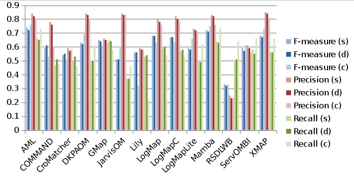
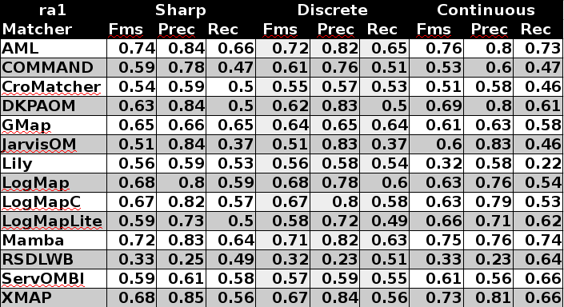
Out of the 14 alignment systems, five (DKP-AOM, Jarvis, LogMapLite, Mamba, and RSDLWB) use 1.0 as the confidence values for all matches they identify. Two (ServOMBI and XMAP) of the remaining nine have some variation in confidence values, though the majority are 1.0. The rest of the system have a fairly wide variation of confidence values. Most of these are near the upper end of the [0,1] range. The exception is Lily, which produces many matches with confidence values around 0.5.
In most cases precision using the uncertain version of the benchmark is the same or less than in the sharp version, while recall is slightly greater with the uncertain version. This is because no new matches were added to the reference alignments, but controversial ones were removed.
Regarding differences between the discrete and continuous evaluations using the uncertain reference alignments, they are in general quite small for precision. This is because of the fairly high confidence values assigned by the systems. COMMAND’s continuous precision is much lower because it assigns very low confidence values to some matches in which the labels are equivalent strings, which many crowdsourcers agreed with unless there was a compelling contextual reason not to. Applying a low threshold value (0.53) for the matcher hides this issue in the discrete case, but the continuous evaluation metrics do not use a threshold.
Recall measures vary more widely between the discrete and continuous metrics. One particularly notable thing is that the alignment systems that set all confidence values to 1.0 see the biggest gains between the discrete and continuous recall on the uncertain version of the benchmark. This is because in the discrete case incorrect matches produced by those systems are counted as a whole false positive, whereas in the continuous version, they are penalized a fraction of that if not many people agreed with the match. While this is interesting in itself, this is a one-time gain in improvement. Improvement on this metric from year-to-year will only be possible if developers modify their systems to produce meaningful confidence values. Another thing to note is the large drop in Lily’s recall between the discrete and continuous approaches. This is because the confidence values assigned by that alignment system are in a somewhat narrow range and universally low, which apparently does not correspond well to human evaluation of the match quality.
For evaluation based on logical reasoning we applied detection of conservativity and consistency principles violations [2, 3]. While consistency principle proposes that correspondences should not lead to unsatisfiable classes in the merged ontology, conservativity principle proposes that correspondences should not introduce new semantic relationships between concepts from one of input ontologies [2].
Table below summarizes statistics per matcher. There are number of ontologies that have unsatisfiable TBox after ontologies merge (#Unsat.Onto), number of all alignments (#Align.), total number of all conservativity principle violations within all alignments (#TotConser.Viol.) and its average per one alignment (#AvgConser.Viol.), total number of all consistency principle violations (#TotConsist.Viol.) and its average per one alignment (#AvgConsist.Viol.).
Five tools (AML, DKP-AOM, LogMap, LogMap-C and XMAP) have no consistency principle violation and two tools (JarvisOM and Mamba) generated only two incoherent alignments. The lowest number of conservativity principle violations has LogMap-C which has a repair technique for them. Further four tools have average of conservativity principle around 1 (DKP-AOM, JarvisOM, LogMap and AML). We should note that these conservativity principle violations can be "false positives" since the entailment in the aligned ontology can be correct although it was not derivable in the single input ontologies.
| Matcher | #Unsat.Onto | #Align. | #Incoh.Align. | #TotConser.Viol. | #AvgConser.Viol. | #TotConsist.Viol. | #AvgConsist.Viol. |
|---|---|---|---|---|---|---|---|
| AML | 0 | 21 | 0 | 39 | 1.86 | 0 | 0 |
| COMMAND | 1 | 21 | 14 | 505 | 25.25 | 235 | 11.75 |
| CroMatcher | 0 | 21 | 6 | 69 | 3.29 | 78 | 3.71 |
| DKPAOM | 0 | 21 | 0 | 16 | 0.76 | 0 | 0 |
| GMap | 0 | 21 | 8 | 196 | 9.33 | 69 | 3.29 |
| JarvisOM | 0 | 21 | 2 | 27 | 1.29 | 7 | 0.33 |
| Lily | 1 | 21 | 9 | 140 | 7 | 124 | 6.2 |
| LogMap | 0 | 21 | 0 | 29 | 1.38 | 0 | 0 |
| LogMapC | 0 | 21 | 0 | 5 | 0.24 | 0 | 0 |
| LogMapLite | 0 | 21 | 3 | 97 | 4.62 | 18 | 0.86 |
| Mamba | 0 | 21 | 2 | 85 | 4.05 | 16 | 0.76 |
| RSDLWB | 2 | 18 | 11 | 48 | 3 | 269 | 16.81 |
| ServOMBI | 2 | 21 | 11 | 1325 | 69.74 | 235 | 12.37 |
| XMAP | 0 | 21 | 0 | 19 | 0.9 | 0 | 0 |
Here we list ten most frequent unsatisfiable classes appeared after ontologies merge by any tool. Two unsatisfiable classes were appeared for all nine tools which violated consistency principle at least once:
ekaw#Contributed_Talk - 9 ekaw#Camera_Ready_Paper - 9 iasted#Worker_non_speaker - 7 iasted#Student_registration_fee - 7 iasted#Student_non_speaker - 7 iasted#Nonauthor_registration_fee - 7 iasted#Non_speaker - 7 ekaw#Poster_Paper - 7 ekaw#Rejected_Paper - 6 ekaw#Industrial_Session - 6
Here we list ten most frequent unsatisfiable classes appeared after ontologies merge by ontology pairs. Three unsatisfiable classes were appeared in all ontology pairs for given ontology:
edas#TwoLevelConference - 6 edas#SingleLevelConference - 6 edas#Conference - 6 sigkdd#Author_of_paper - 5 ekaw#Contributed_Talk - 5 ekaw#Camera_Ready_Paper - 5 cmt#PaperFullVersion - 5 cmt#PaperAbstract - 5 cmt#Paper - 5 cmt#ExternalReviewer - 5
Here we list ten most frequent caused new semantic relationships between concepts within input ontologies by any tool:
iasted#Record_of_attendance, iasted#City - 10
edas-iasted
iasted#Sponzorship, iasted#Fee - 9
iasted-sigkdd
iasted#Session_chair, iasted#Speaker - 9
iasted-sigkdd
ekaw-iasted
conference#Invited_speaker, conference#Conference_participant - 9
conference-ekaw
conference-iasted
iasted#Video_presentation, iasted#Item - 8
ekaw-iasted
conference-iasted
iasted#Sponzorship, iasted#Registration_fee - 8
iasted-sigkdd
iasted#Presentation, iasted#Item - 8
ekaw-iasted
conference-iasted
iasted#PowerPoint_presentation, iasted#Item - 8
ekaw-iasted
conference-iasted
iasted#Hotel_fee, iasted#Registration_fee - 8
iasted-sigkdd
iasted#Fee_for_extra_trip, iasted#Registration_fee - 8
iasted-sigkdd
Here we list ten most frequent caused new semantic relationships between concepts within input ontologies by ontology pairs:
iasted#Worker_lecturer, iasted#Place - 4
ServOMBI
COMMAND
iasted#Tutorial_speaker, iasted#Place - 4
ServOMBI
COMMAND
iasted#Student_lecturer, iasted#Place - 4
ServOMBI
COMMAND
iasted#Reviewer, iasted#Place - 4
ServOMBI
COMMAND
iasted#Plenary_lecture_speaker, iasted#Place - 4
ServOMBI
COMMAND
iasted#Lecturer, iasted#Place - 4
ServOMBI
COMMAND
iasted#Author_cd_proceedings_included, iasted#Place - 4
ServOMBI
COMMAND
iasted#Author_book_proceedings_included, iasted#Place - 4
ServOMBI
COMMAND
iasted#Author, iasted#Place - 4
ServOMBI
COMMAND
conference#Publisher, conference#Conference_document - 4
ServOMBI
Lily
[1] Michelle Cheatham, Pascal Hitzler: Conference v2.0: An Uncertain Version of the OAEI Conference Benchmark. International Semantic Web Conference (2) 2014: 33-48.
[2] Alessandro Solimando, Ernesto Jiménez-Ruiz, Giovanna Guerrini: Detecting and Correcting Conservativity Principle Violations in Ontology-to-Ontology Mappings. International Semantic Web Conference (2) 2014: 1-16.
[3] Alessandro Solimando, Ernesto Jiménez-Ruiz, Giovanna Guerrini: A Multi-strategy Approach for Detecting and Correcting Conservativity Principle Violations in Ontology Alignments. OWL: Experiences and Directions Workshop 2014 (OWLED 2014). 13-24.
[4] Svab O., Svatek V., Berka P., Rak D., Tomasek P.: OntoFarm: Towards an Experimental Collection of Parallel Ontologies. In: Poster Track of ISWC 2005, Galway.